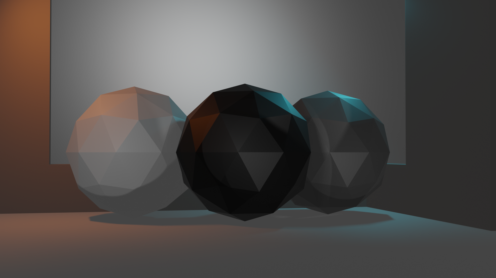

„Infinity Key“ 25 | Nennspannung: 3V | Betriebstemperatur -20°C bis +60°C | Abschaltspannung: 2,5V | Kapazität: 100mAh[1]
[1] Der Stromverbrauch wurde unter normaler Nutzung auf Grundlage der VO 2917/1153/EU ermittelt. Die tatsächliche Akku-Leistung kann variieren.
Bis zu
212 Tagen
vollelektrische Akkuladezyklen[1]
In
15 min
auf bis zu 80% geladen*
Bis zu
35 m
Reichweite zum Fahrzeug[2]
*Die geschätzte Ladezeit entspricht einer Ladung von 10% - 80% unter Verwendung eines 20V-Netzteils
[1] Der Stromverbrauch wurde unter normaler Nutzung auf Grundlage der VO 2917/1153/EU ermittelt. Die tatsächliche Akku-Leistung kann variieren.
[2] Im Alltag kann sich die Reichweite vom hier angegebenen Wert unterscheiden. Gegenstände oder Personen können das Funksignal beeinträchtigen und die Reichweite verringern. Der angegebene Wert wurde unter Optimal-Bedingungen ohne Störfaktoren gemessen.
„Infinity Key“ 25 | Nennspannung: 3V | Betriebstemperatur -20°C bis +60°C | Abschaltspannung: 2,5V | Kapazität: 100mAh[1]
[1] Im realen Betrieb können Abweichungen im Vergleich zu den zertifizierten Normwerten auftreten. Die Realwerte werden von einer Vielzahl individueller Faktoren beeinflusst, z.B. individuelle Nutzungsweise, Umwelt und Alltagsverhältnisse.
Klare Kanten und höchste Qualität
Eleganz aus jedem Blickwinkel
„Infinity Key“ 25 | Nennspannung: 3V | Betriebstemperatur -20°C bis +60°C | Abschaltspannung: 2,5V | Kapazität: 100mAh[1]
[1] Im realen Betrieb können Abweichungen im Vergleich zu den zertifizierten Normwerten auftreten. Die Realwerte werden von einer Vielzahl individueller Faktoren beeinflusst, z.B. individuelle Nutzungsweise, Umwelt und Alltagsverhältnisse.
[2] Der Stromverbrauch wurde unter normaler Nutzung auf Grundlage der VO 2917/1153/EU ermittelt. Die tatsächliche Akku-Leistung kann variieren.
[3] Im Alltag kann sich die Reichweite vom hier angegebenen Wert unterscheiden. Gegenstände oder Personen können das Funksignal beeinträchtigen und die Reichweite verringern. Der angegebene Wert wurde unter Optimal-Bedingungen ohne Störfaktoren gemessen.
„Infinity Key“ 25 | Nennspannung: 3V | Betriebstemperatur -20°C bis +60°C | Abschaltspannung: 2,5V | Kapazität: 100mAh[1]
[1] Im realen Betrieb können Abweichungen im Vergleich zu den zertifizierten Normwerten auftreten. Die Realwerte werden von einer Vielzahl individueller Faktoren beeinflusst, z.B. individuelle Nutzungsweise, Umwelt und Alltagsverhältnisse.
[2] Der Stromverbrauch wurde unter normaler Nutzung auf Grundlage der VO 2917/1153/EU ermittelt. Die tatsächliche Akku-Leistung kann variieren.
[3] Im Alltag kann sich die Reichweite vom hier angegebenen Wert unterscheiden. Gegenstände oder Personen können das Funksignal beeinträchtigen und die Reichweite verringern. Der angegebene Wert wurde unter Optimal-Bedingungen ohne Störfaktoren gemessen.
Komfort in der Jackentasche
Vielseitigkeit für alle
Pures Fahrerlebnis ohne Kompromisse
Datensicherheit für alle Fälle
RFID-Schutz
Integrierter Diebstahlschutz mit Tracking
Alle Komfort- und Sicherheitsfeatures sind ab Werk inklusive. Mit Kauf des Infinity Key können Sie diese lebenslang nutzen. Zusätzlich sind optionale On-Demand-Käufe möglich, um erweiterte Funktionen freizuschalten. Diese sind für die Grundfunktionen des Produkts nicht erforderlich. Bevor Sie Tracking und andere Dienste nutzen können, müssen Sie Ihren Infinity Key in der Mercedes Me-App registrieren. Über diese App können Sie anschließend alle Funktionen nutzen. Nachträglich erworbene On-Demand-Ausstattungen sind dauerhaft für den Schlüssel aktiviert und können bei einem Fahrzeugwechsel problemlos umgezogen werden. Sollten Sie mehrere Konten oder Fahrzeuge mit einem Schlüssel nutzen wollen, müssen Sie diese in der Mercedes Me-App miteinander verknüpfen. Weitere Informationen finden Sie unter: www.mercedes-benz.de/mercedesme
„Infinity Key“ 25 | Nennspannung: 3V | Betriebstemperatur -20°C bis +60°C | Abschaltspannung: 2,5V | Kapazität: 100mAh[1]
[1] Im realen Betrieb können Abweichungen im Vergleich zu den zertifizierten Normwerten auftreten. Die Realwerte werden von einer Vielzahl individueller Faktoren beeinflusst, z.B. individuelle Nutzungsweise, Umwelt und Alltagsverhältnisse.
[2] Der Stromverbrauch wurde unter normaler Nutzung auf Grundlage der VO 2917/1153/EU ermittelt. Die tatsächliche Akku-Leistung kann variieren.
[3] Im Alltag kann sich die Reichweite vom hier angegebenen Wert unterscheiden. Gegenstände oder Personen können das Funksignal beeinträchtigen und die Reichweite verringern. Der angegebene Wert wurde unter Optimal-Bedingungen ohne Störfaktoren gemessen.
Exzellentes Design
Nachhaltige Materialien
von zertifizierten Vertragspartnern
Neueste Funkwellentechnologie
EQ-Performance
Integration in alle Mercedes EQ-Modelle
„Infinity Key“ 25 | Nennspannung: 3V | Betriebstemperatur -20°C bis +60°C | Abschaltspannung: 2,5V | Kapazität: 100mAh[1]
[1] Im realen Betrieb können Abweichungen im Vergleich zu den zertifizierten Normwerten auftreten. Die Realwerte werden von einer Vielzahl individueller Faktoren beeinflusst, z.B. individuelle Nutzungsweise, Umwelt und Alltagsverhältnisse.
[2] Der Stromverbrauch wurde unter normaler Nutzung auf Grundlage der VO 2917/1153/EU ermittelt. Die tatsächliche Akku-Leistung kann variieren.
[3] Im Alltag kann sich die Reichweite vom hier angegebenen Wert unterscheiden. Gegenstände oder Personen können das Funksignal beeinträchtigen und die Reichweite verringern. Der angegebene Wert wurde unter Optimal-Bedingungen ohne Störfaktoren gemessen.
Konfigurieren Sie jetzt Ihren Infinity Key.*
Ausprobieren bei Ihrem Händler in der Nähe.
*Bitte beachten Sie, dass für den Infinity Key 35+ aktuell ausschließlich bereits vorkonfigurierte Modelle zur Verfügung stehen. Gemeinsam finden wir Ihren nächsten Infinity Key.
„Infinity Key“ 25 | Nennspannung: 3V | Betriebstemperatur -20°C bis +60°C | Abschaltspannung: 2,5V | Kapazität: 100mAh[1]
[1] Im realen Betrieb können Abweichungen im Vergleich zu den zertifizierten Normwerten auftreten. Die Realwerte werden von einer Vielzahl individueller Faktoren beeinflusst, z.B. individuelle Nutzungsweise, Umwelt und Alltagsverhältnisse.
[2] Der Stromverbrauch wurde unter normaler Nutzung auf Grundlage der VO 2917/1153/EU ermittelt. Die tatsächliche Akku-Leistung kann variieren.
[3] Im Alltag kann sich die Reichweite vom hier angegebenen Wert unterscheiden. Gegenstände oder Personen können das Funksignal beeinträchtigen und die Reichweite verringern. Der angegebene Wert wurde unter Optimal-Bedingungen ohne Störfaktoren gemessen.
*Bitte beachten Sie, dass für den Infinity Key 35+ aktuell ausschließlich bereits vorkonfigurierte Modelle zur Verfügung stehen. Gemeinsam finden wir Ihren nächsten Infinity Key.
„Infinity Key“ 25 | Nennspannung: 3V | Betriebstemperatur -20°C bis +60°C | Abschaltspannung: 2,5V | Kapazität: 100mAh[1]
[1] Im realen Betrieb können Abweichungen im Vergleich zu den zertifizierten Normwerten auftreten. Die Realwerte werden von einer Vielzahl individueller Faktoren beeinflusst, z.B. individuelle Nutzungsweise, Umwelt und Alltagsverhältnisse.
[2] Der Stromverbrauch wurde unter normaler Nutzung auf Grundlage der VO 2917/1153/EU ermittelt. Die tatsächliche Akku-Leistung kann variieren.
[3] Im Alltag kann sich die Reichweite vom hier angegebenen Wert unterscheiden. Gegenstände oder Personen können das Funksignal beeinträchtigen und die Reichweite verringern. Der angegebene Wert wurde unter Optimal-Bedingungen ohne Störfaktoren gemessen.
Nach oben
Einstellungen Datenschutz Rechtliche Hinweise